Education
MS Computer Science, UC Davis. BS Computer Science, Networks and Security, CSUMB, magna cum laude.
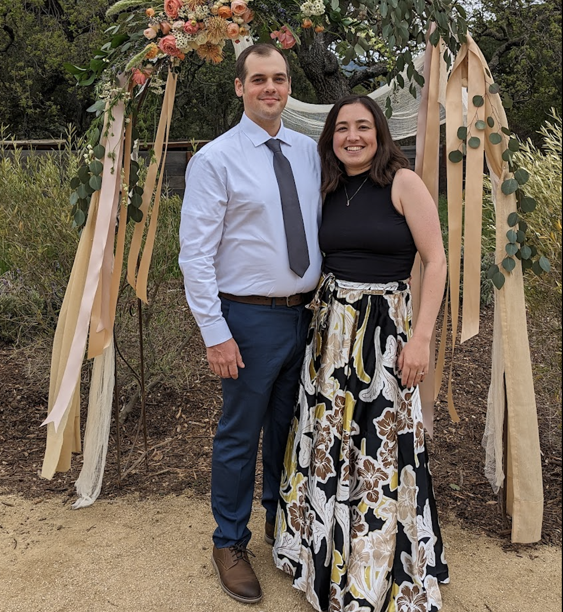
About
I am a father, musician, outdoor person, and computer scientist. I recently completed my MS in Computer Science at UC Davis after earning a BS in Computer Science with a Networks and Security concentration from California State University, Monterey Bay.
My professional work is grounded in embedded and real-time software. At Lansmont, I build firmware and control software for vibration controllers and data acquisition systems in C/C++ on FreeRTOS and Yocto Linux, along with C#/.NET and PySide6 tools that configure tests, stream results, and retrieve waveform data over serial and TCP links.
I tend to get absorbed by ideas that combine craft and utility: radios, privacy tools, embedded controllers, compression schemes, home servers, music sites, and networks that can keep working without perfect infrastructure. My best work usually starts with a practical question and turns into a deeper systems problem.
Outside of research and engineering, I spend my time with my family, making music, and getting outdoors.
Education and tools
MS Computer Science, UC Davis. BS Computer Science, Networks and Security, CSUMB, magna cum laude.
C, C++, C#, Python, Java, JavaScript, Kotlin, Bash, Awk, Sed, and Tcl.
GNU/Linux, Windows, Android, U-Boot, Yocto Linux, Xilinx Zynq SoC platforms, Docker, QEMU, VMware, and VirtualBox.
Life outside the terminal
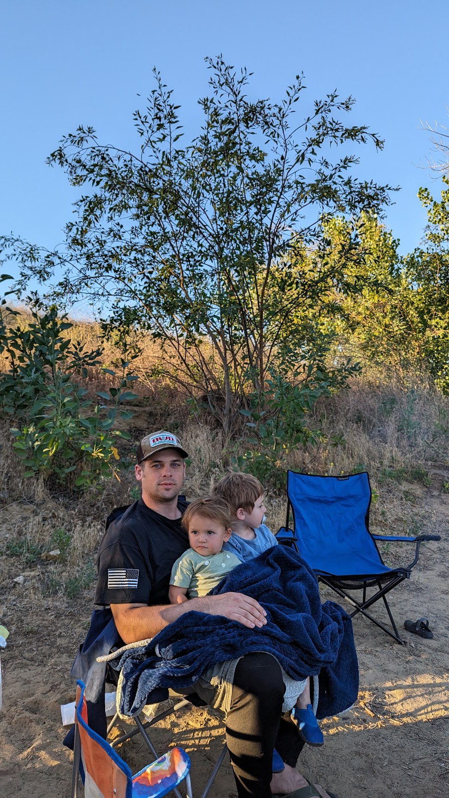
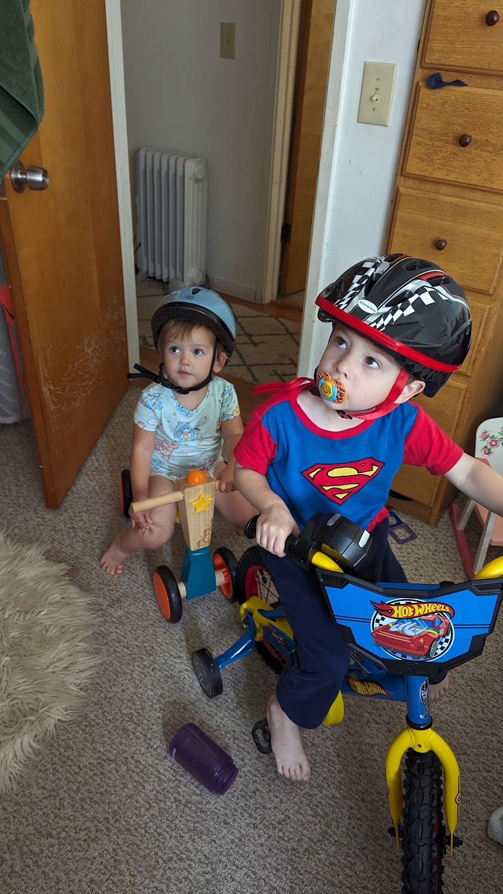
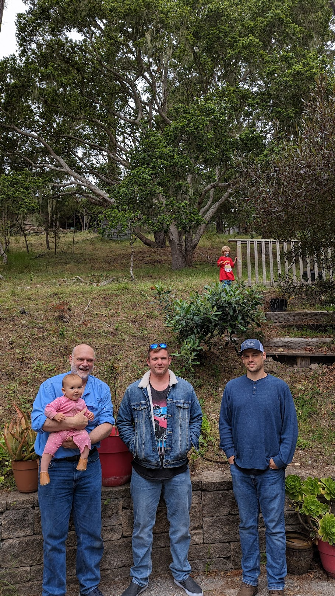
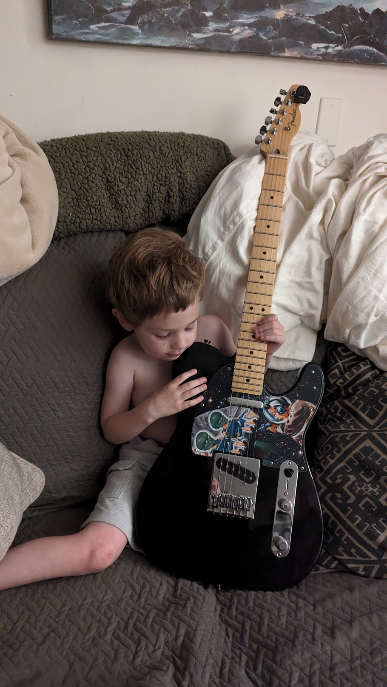
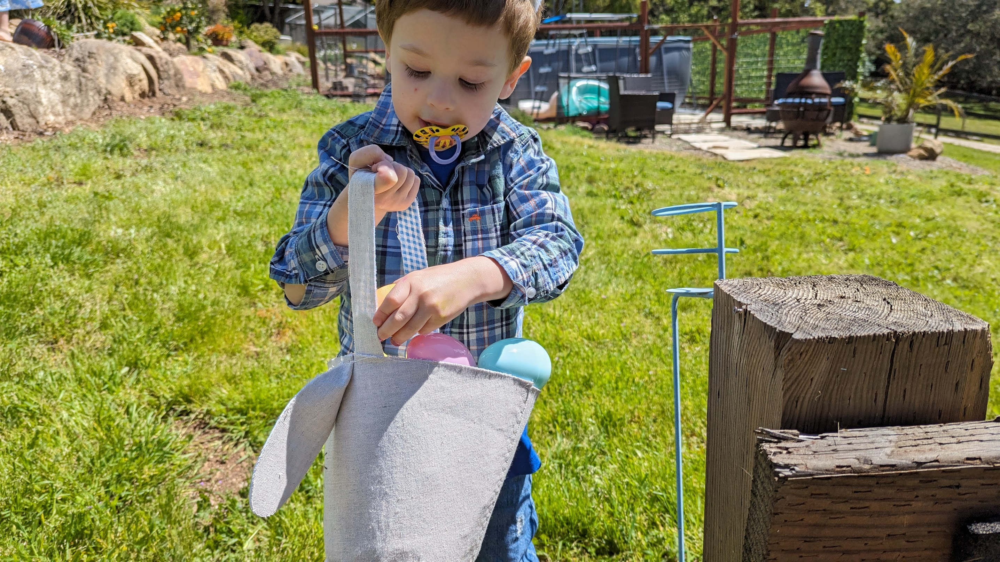
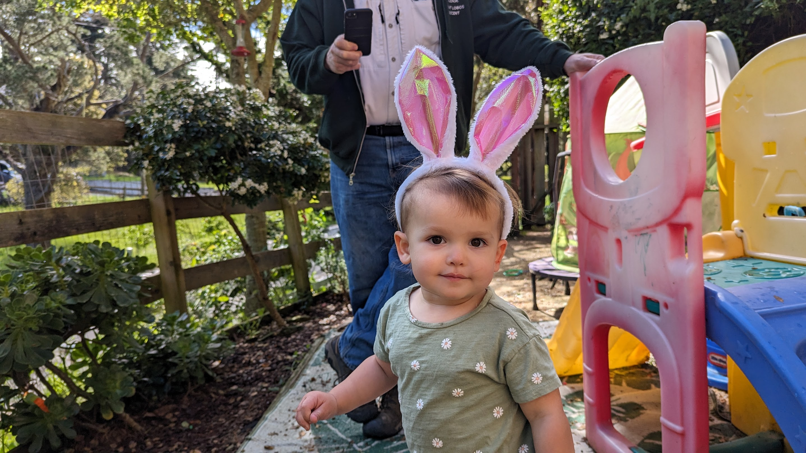
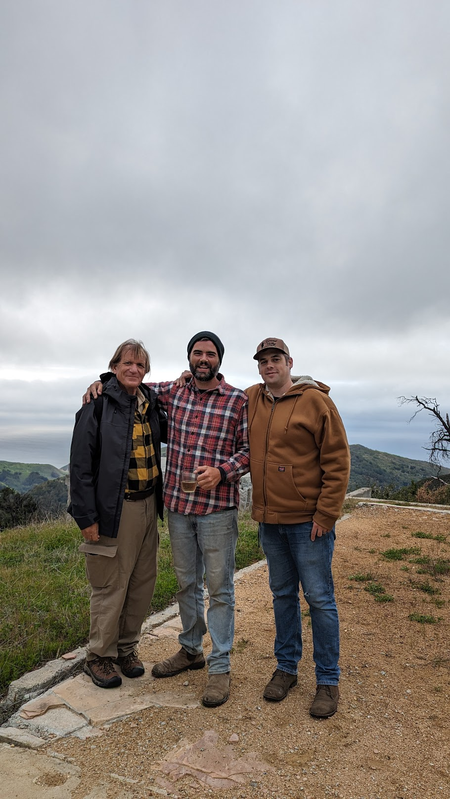
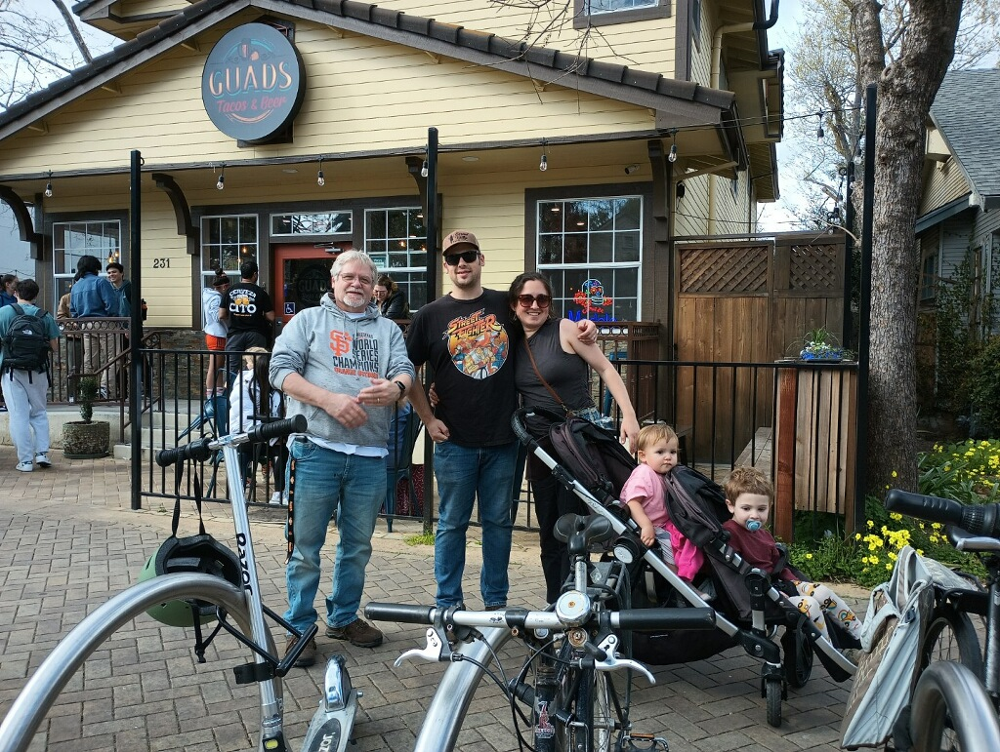
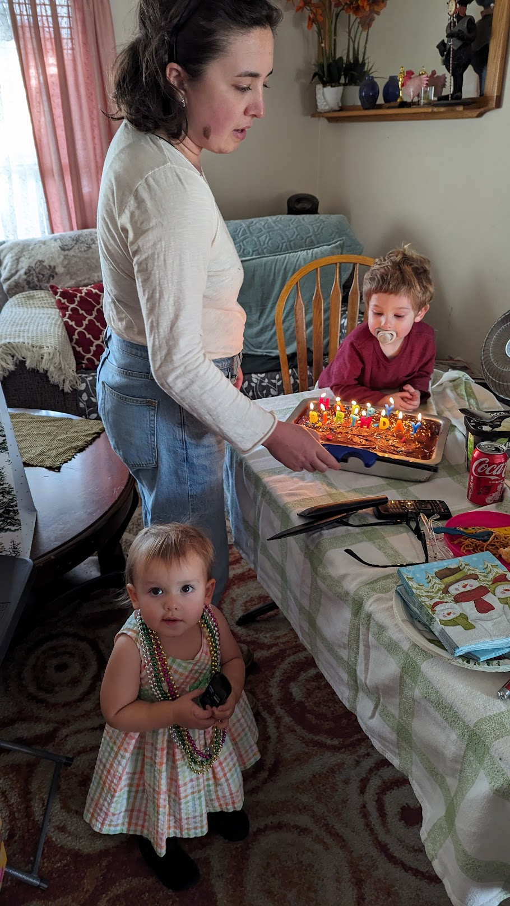
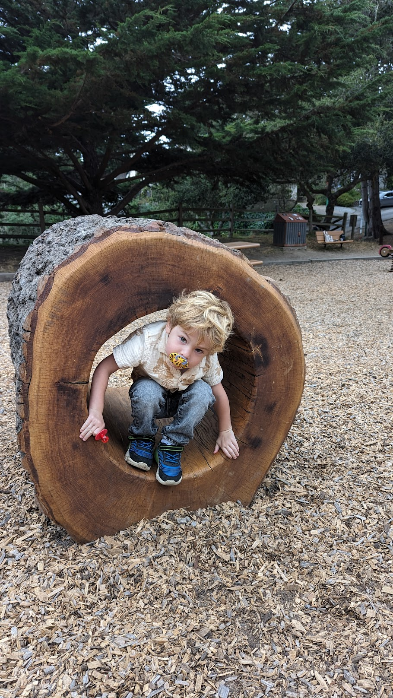
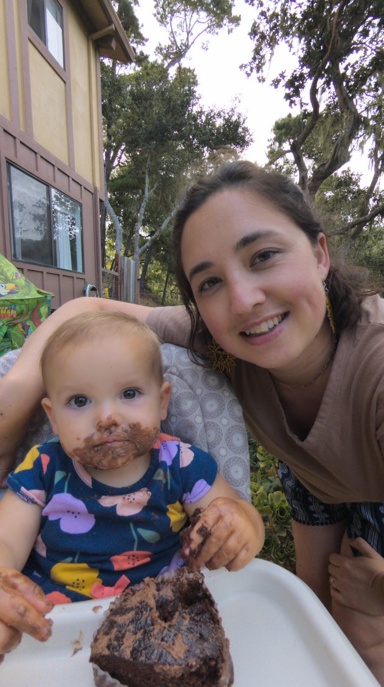
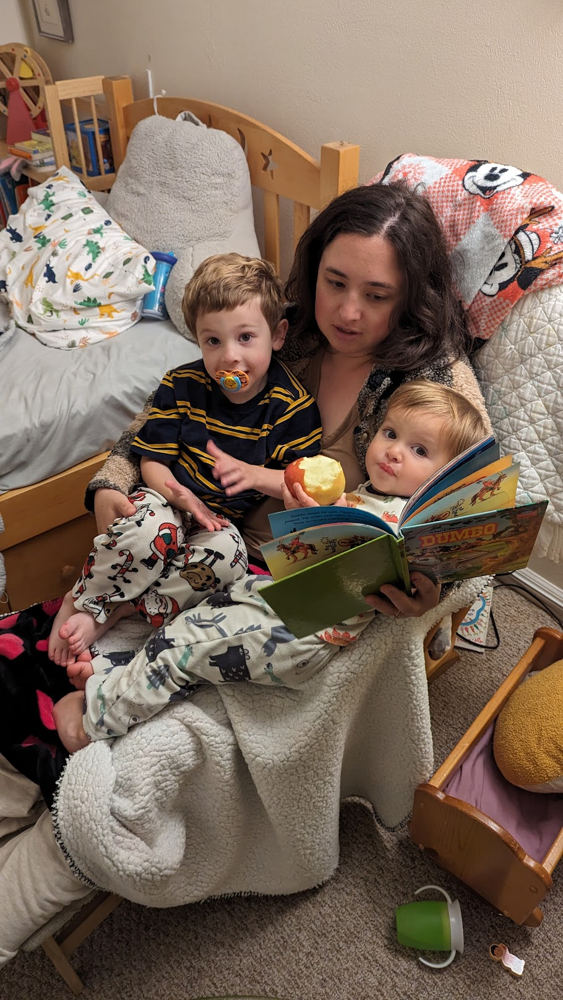